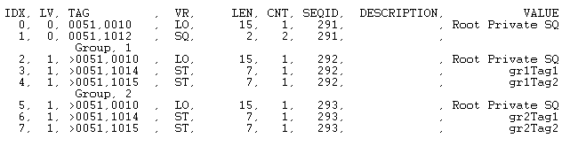
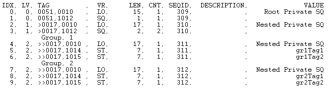

The IDLffDicomEx::AddPrivateGroup function method creates a group within a private sequence. A group is a set of repeating tags in a sequence. For example a sequence can have the same set of 10 tags repeat itself 4 times in one sequence, which means the sequence would have 4 groups, each with the same 10 tags.
When calling AddPrivateGroup, the PrivateCode, Group, and Element arguments identify the characteristics and placement of the group. The optional PARENTSEQID keyword can be used to specify the private sequence (SQ) attribute to which the group is to be added. If this value is non-zero then it identifies a sequence by sequence identifier, which may have been returned by a previous call to IDLffDicomEx::AddPrivateSequence or IDLffDicomEx::GetPrivateValue . If the sequence does not exist, the AddPrivateGroup method creates the sequence before creating the group in this sequence. Once the group has been created, member items can be added via the IDLffDicomEx::SetPrivateValue method using the return value from this method, the identifier of the new group.
Note: The new group is not written to the DICOM file until you call the IDLffDicomEx::Commit method. When you commit changes, the sequence identifier is invalidated. You need to call IDLffDicomEx::GetValue to re-access the sequence identifier.
Result = Obj ->[ IDLffDicomEx ::]AddPrivateGroup ( PrivateCode, Group, Element [, PARENTSEQID = integer ] )
Returns a long integer containing the group identifier for the newly created group. This identifier can be used by other methods that use the SEQID keyword such as IDLffDicomEx::GetPrivateValue and IDLffDicomEx::SetPrivateValue methods.
A string identification code that identifies the private block of data. Within a given private group PrivateCode labels are stored sequentially in the element addresses ranging from '0010' to '00FF'. For example, the string value stored at DICOM tag address '0029,0010' is the PrivateCode for the block of data tagged at '0029,1000' - '0029,10FF'. The label stored at '0029,0011' would be the PrivateCode for the data in tags '0029,1100' - '0029,11 FF'.
A string identifying the group tag number of the private attribute (the first four digits of a DICOM tag). This must be an odd number and in the form 'XXXX'. If this does not reference an existing sequence, then a new private sequence is created.
A string identifying the last two digits of the element associated with the private attribute. This must be in the form 'XX'. Valid values are 10 - FF.
Note: The first two digits of the Element are implicit in the PrivateCode argument.
Set this keyword only if adding the new group (the new sequence and its repeating sets of tags) to an existing sequence. Use this keyword to specify a parent sequence identifier of a sequence to add the new group to as follows:
This section features the following two examples:
The following example adds a two sets of repeating private attributes to a root level sequence in a DICOM file. There is no need to use the NON_CONFORMING keyword when creating the clone if you will only be adding private attributes, which are not regulated by the DICOM standard. For an example that adds private groups to a nested sequenced, see Adding Private Sets of Tags to a Nested Sequence .
Note: The cloned file containing these changes is not written to disk. To persist the file, call the IDLffDicomEx::Commit method.
PRO dicom_setprivaterootgroup_doc
; Select a DICOM file.
sFile = DIALOG_PICKFILE( $
PATH=FILEPATH('',SUBDIRECTORY=['examples','data']), $
TITLE='Select DICOM Patient File', FILTER='*.dcm', $
GET_PATH=path)
; Create a clone (aImgClone.dcm) of the selected file (sfile).
oImg = OBJ_NEW('IDLffDicomEx', path + 'aImgClone.dcm', $
CLONE=sfile)
; Add two sets of repeating tags (groups) to a private sequence
; (0051, 0012), which is created by AddPrivateGroup. This sequence
; exists at the root-level of the DICOM file. Add two sets of
; repeating tags to the root sequence.
vGrp1 = oImg->AddPrivateGroup('Root Private SQ', '0051', '12')
oImg->SetPrivateValue, 'Root Private SQ', '0051', '14', 'ST', $
'gr1Tag1', SEQID=vGrp1
oImg->SetPrivateValue, 'Root Private SQ', '0051', '15', 'ST', $
'gr1Tag2', SEQID=vGrp1
vGrp2 = oImg->AddPrivateGroup('Root Private SQ', '0051', '12')
oImg->SetPrivateValue, 'Root Private SQ', '0051', '14', 'ST', $
'gr2Tag1', SEQID=vGrp2
oImg->SetPrivateValue, 'Root Private SQ', '0051', '15', 'ST', $
'gr2Tag2', SEQID=vGrp2
; Print a range including the new tags to
; the Output Log window.
vTags = oImg->EnumerateTags(COUNT=vTagCnt, $
START_TAG='0051,0000', STOP_TAG='0057,0000')
; Format the output.
PRINT, FORMAT= $
'(%"%3s, %2s, %-12s, %3s, %7s, %3s, %5s, %12s, %15s")', $
'IDX', 'LVL', 'TAG', 'VR', 'LEN', 'CNT', 'SEQID', $
'DESCRIPTION', 'VALUE'
; Cycle through the tags.
FOR xx = 0, vTagCnt-1 DO BEGIN
; If the item is nested within another item, indicate the
; level using > symbol.
IF (vTags[xx].Level GT 0) THEN BEGIN
vLvl = STRJOIN(REPLICATE('>',vTags[xx].Level))
vtg = vLvl + vTags[xx].Tag
ENDIF ELSE BEGIN
vtg = vTags[xx].Tag
ENDELSE
; If the tags are in a group, indicate this.
IF (vTags[xx].GroupNum GT 0) THEN BEGIN
PRINT, FORMAT='(%"%15s, %1d")', 'Group', vTags[xx].GroupNum
ENDIF
; Print the fields of the structure.
PRINT, FORMAT = $
'(%"%3d, %2d, %-12s, %3s, %7d, %3d, %5d, %12s, %15s")', $
xx, vTags[xx].Level, vtg, vTags[xx].VR, vTags[xx].Length, $
vTags[xx].ValueCount, vTags[xx].SeqId, $
vTags[xx].Description, vTags[xx].Value
ENDFOR
; Clean up references.
OBJ_DESTROY, oImg
END
Running the previous example creates private sets of repeating tags as shown in the following figure.

The following example builds on the previous example and simply adds private sets of tags to a nested sequence.
Note: This example does not save the cloned file to disk. To do so, call the IDLffDicomEx::Commit method.
PRO dicom_setprivatenestedgroup_doc
; Select a DICOM file.
sFile = DIALOG_PICKFILE(PATH='examples\data', $
TITLE='Select DICOM Patient File', FILTER='*.dcm', $
GET_PATH=path)
; Create a clone (aImgClone.dcm) of the selected file (sfile).
oImg = OBJ_NEW('IDLffDicomEx', path+'\'+'aImgClone.dcm', $
CLONE=sfile)
; Add a private sequence to the root level of the file.
vRootSeq = oImg->AddPrivateSequence('Root Private SQ', $
'0051', '12')
; Add two sets of repeating tags (groups) to a private sequence
; (0017,0012, which is created by AddPrivateGroup) that is nested
; in the root sequence. The parent sequence identifier of each set
; of repeating tags is the root sequence.
vGrp1 = oImg->AddPrivateGroup('Nested Private SQ', '0017', '12', $
PARENTSEQID=vRootSeq)
oImg->SetPrivateValue, 'Nested Private SQ', '0017', '14', 'ST',$
'gr1Tag1', SEQID=vGrp1
oImg->SetPrivateValue, 'Nested Private SQ', '0017', '15', 'ST',$
'gr1Tag2', SEQID=vGrp1
vGrp2 = oImg->AddPrivateGroup('Nested Private SQ', '0017', '12', $
PARENTSEQID=vRootSeq)
oImg->SetPrivateValue, 'Nested Private SQ', '0017', '14', 'ST',$
'gr2Tag1', SEQID=vGrp2
oImg->SetPrivateValue, 'Nested Private SQ', '0017', '15', 'ST',$
'gr2Tag2', SEQID=vGrp2
; Print a range including the new tags to
; the Output Log window.
vTags = oImg->EnumerateTags(COUNT=vTagCnt, $
START_TAG='0051,0000', STOP_TAG='0057,0000')
; Format the output.
PRINT, FORMAT= $
'(%"%3s, %2s, %-12s, %3s, %7s, %3s, %5s, %12s, %20s")', $
'IDX', 'LVL', 'TAG', 'VR', 'LEN', 'CNT', 'SEQID', $
'DESCRIPTION', 'VALUE'
; Cycle through the tags.
FOR xx = 0, vTagCnt-1 DO BEGIN
; If the item is nested within another item, indicate the
; level using > symbol.
IF (vTags[xx].Level GT 0) THEN BEGIN
vLvl = STRJOIN(REPLICATE('>',vTags[xx].Level))
vtg = vLvl + vTags[xx].Tag
ENDIF ELSE BEGIN
vtg = vTags[xx].Tag
ENDELSE
; If the tags are in a group, indicate this.
IF (vTags[xx].GroupNum GT 0) THEN BEGIN
PRINT, FORMAT='(%"%15s, %1d")', 'Group', vTags[xx].GroupNum
ENDIF
; Print the fields of the structure.
PRINT, FORMAT = $
'(%"%3d, %2d, %-12s, %3s, %7d, %3d, %5d, %12s, %20s")', $
xx, vTags[xx].Level, vtg, vTags[xx].VR, vTags[xx].Length, $
vTags[xx].ValueCount, vTags[xx].SeqId, $
vTags[xx].Description, vTags[xx].Value
ENDFOR
; Clean up references.
OBJ_DESTROY, oImg
END
The output of the previous example appears similar to the following figure. The root level sequence (line 1) contains a nested sequence (line 3) with two groups of repeating tags.

|
6.1 |
Introduced |